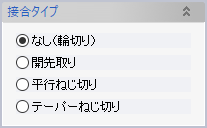

配管接合指示
パイプ要素（直管）の接合方法（開先取り、ねじ切りなど）を指定し、配管一品図に出力できるようにします。
また、3Dモデルのドキュメントウィンドウで表示フィルターの「工作属性（配管設計）」をONにすると、指定した接合方法に応じたシンボルがパイプ端に表示されます。
操作方法
パイプ要素のいずれかの一端を選択し、指定したい接合タイプを選択してOKをクリックします。すでに接合タイプを指定してあるパイプ端を選択すると、指定ずみのタイプが表示されます。
パラメーター
- パイプ端選択

属性を付加したいパイプ（直管）の端部を1箇所選択します。
- 接合タイプ

指定したい接合方法を選択します。
要素検索コマンドを利用して接合方法を指定ずみのパイプ要素を検索できます。